阅读指引
先了解订单状态与页面入口，再看后续章节会更顺畅。
订单状态一览
| 状态 | 含义 | 可做的事 |
|---|---|---|
| 已创建 / 待支付 | 订单已生成，尚未完成支付 | 立即支付、取消订单 |
| 待绑定 | 已支付，等待前往门店取车 | 查看取还信息、开关自动续租 |
| 租赁中 | 已领取车辆/电池，订单时长开始计算 | 续租、开关自动续租、查看费用明细 |
| 即将到期 | 临近归还时间 | 续租、查看计费与逾期规则 |
| 逾期未还 / 违约锁单 | 超过归还时间未归还 | 续租、尽快归还 |
截图取自原型演示环境，示例门店、车型与金额均仅作操作示意；实际以你所在门店的实时库存与价格为准。
第 1 章 租赁下单
从首页入口一路走到取车绑定，共 8 个步骤。中途退出不会生成订单，只有提交订单后才会占用库存。
1.1 进入租赁入口
打开 App 首页，在功能卡片中点击 租赁入口。未登录时会先跳转登录页，登录后自动回到该入口。
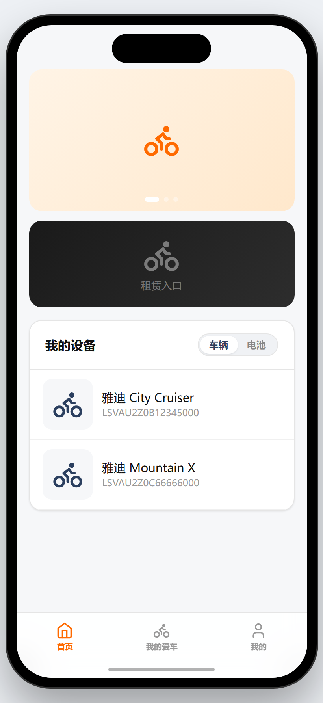
下方「我的设备」可查看已绑定车辆与电池
首页底部导航分为 首页 / 我的爱车 / 我的，租赁下单全程都从「首页 → 租赁入口」进入。
1.2 选择租赁类型与方案
进入车辆租赁页后，先确认当前定位与最近门店距离，再选择 租赁类型 与 租赁方案：
- 租赁类型：全部 / 车辆租赁 / 电池租赁 / 车电套餐
- 租赁方案：全部 / 时租 / 日租 / 周租 / 月租
两项都保持「全部」时会展示门店内所有可租项；选择具体方案后，列表只保留对应计费方式的车型。确认后点击 立即选购。
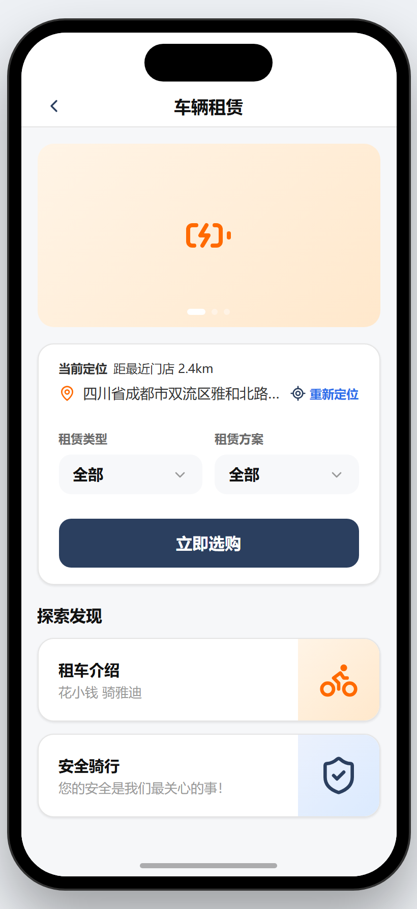
1.3 选择门店
系统按距离列出附近门店（50km），包含门店名称、地址。点击目标门店进入该门店的可租清单。
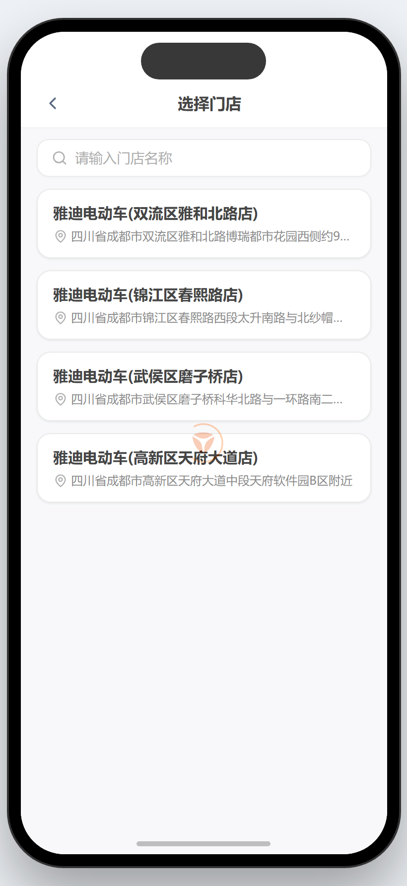
车辆与电池库存按门店独立管理，页面会提示「库存以门店实际现货为准，建议提前联系门店确认」。
1.4 选择车辆方案
进入「选择方案」页，页面顶部显示门店信息与 联系门店 / 导航到店 两个快捷操作；下方为车辆或电池卡片，每张卡片展示：
- 车型名称与卖点描述（续航、电池规格等）
- 当前计费方案下的单价（时租按小时、日租按天、周租按周、月租按月）
- 立即租 按钮
确认车型与单价后，点击对应卡片的 立即租。
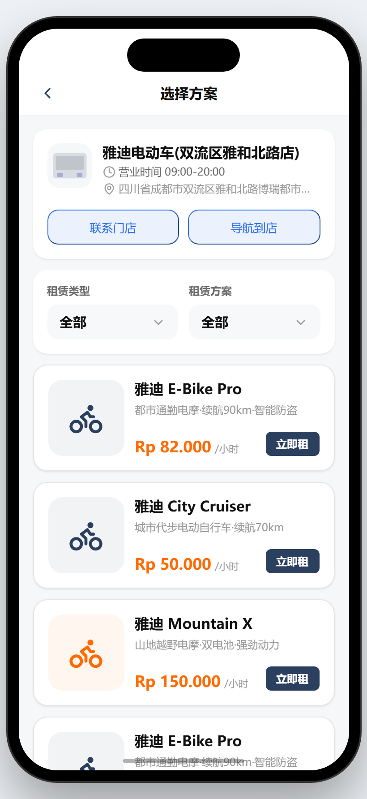
1.5 确认订单
「订单确认」页分为三段，务必逐项核对：
- 车辆与方案：车型、租赁方案（时租 / 日租 / 周租 / 月租）、单价、租赁时长与押金。方案和时长都可以在这一步直接修改，金额会实时重算。
- 实名信息与支付方式：实名信息是否为必填项由门店配置决定，门店要求实名时该项带
*号；支付方式可选 2C2P、线下支付 或 钱包余额。 - 自动续租与取还信息：自动续租开关（详见第 2 章）、取用与归还时间、门店信息、租赁须知 / 计费规则 / 取消规则 / 逾期规则。
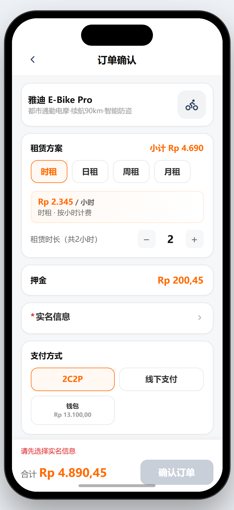
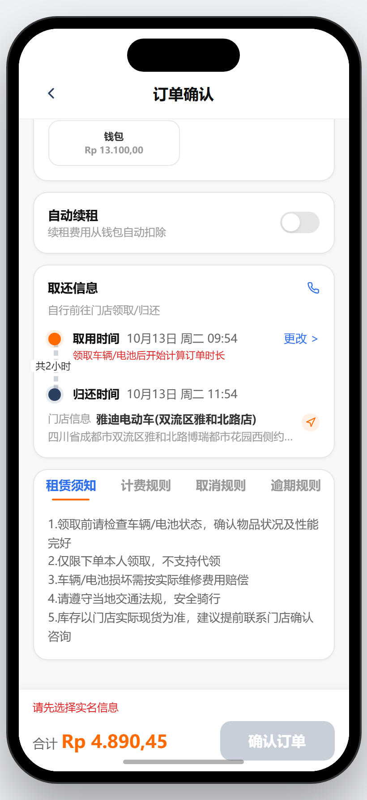
1. 计费起始时间以用户领取车辆/电池时间为准，计费终止时间以门店结束订单时间为准；
2. 周期租金根据订单选定租赁方案进行核算；
3. 租赁时长不足 1 个周期的，按 1 个周期计费。
领取前请检查车辆/电池状态；仅限下单本人领取，不支持代领；车辆/电池损坏需按实际维修费用赔偿；请遵守当地交通法规，安全骑行。
1.6 填写实名信息
实名信息是否必填由门店配置决定：门店要求实名时，未选择实名信息无法提交订单；未做要求的门店可跳过本步骤。
点击 实名信息 进入「选择实名信息」弹层。首次使用会显示「暂无实名信息」，点击 新增 录入：
- 姓名（必填）
- 身份证号（必填）
- 驾驶证号（必填）
- 证件照片：身份证与驾驶证各至少上传 1 张，最多 2 张；上传时可选择「拍照」或「相册」
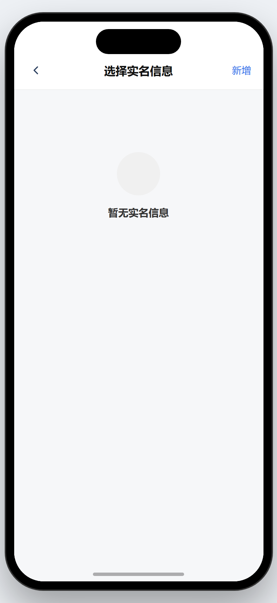
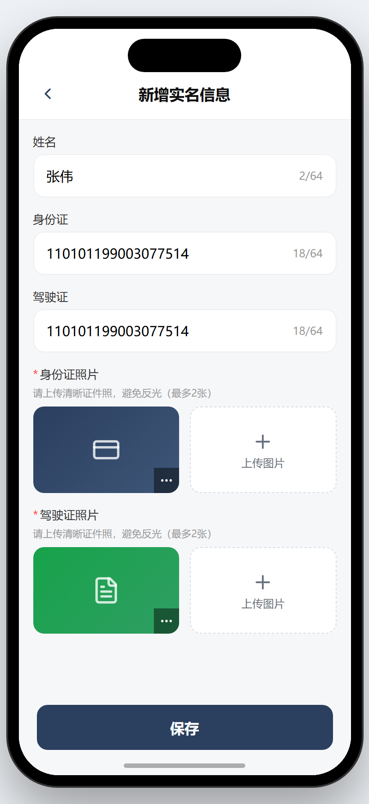
缺少任一必填项都会拦截提交，例如「请输入姓名」「请输入证件号码」「请至少上传1张身份证照片」。补齐后点击 保存，回到弹层选择该条记录即完成实名。
实名信息选定后，确认页的实名信息行会显示姓名与脱敏证件号，底部提示消失，确认订单 按钮变为可点击。
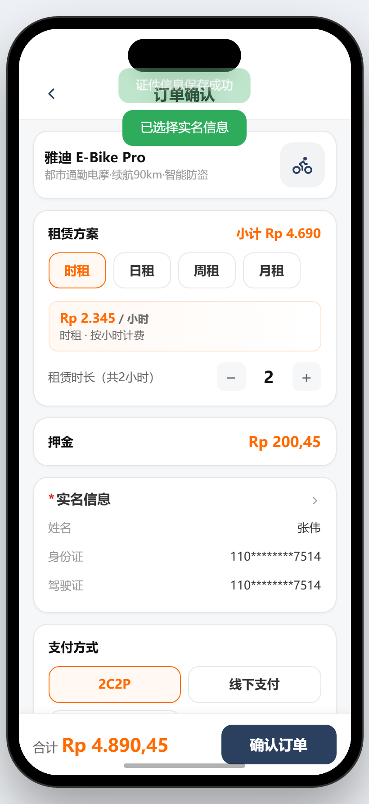
1.7 提交订单与支付
点击 确认订单 后订单生成，进入订单详情页，此时状态为 已创建 / 待支付，底部出现 立即支付 按钮。
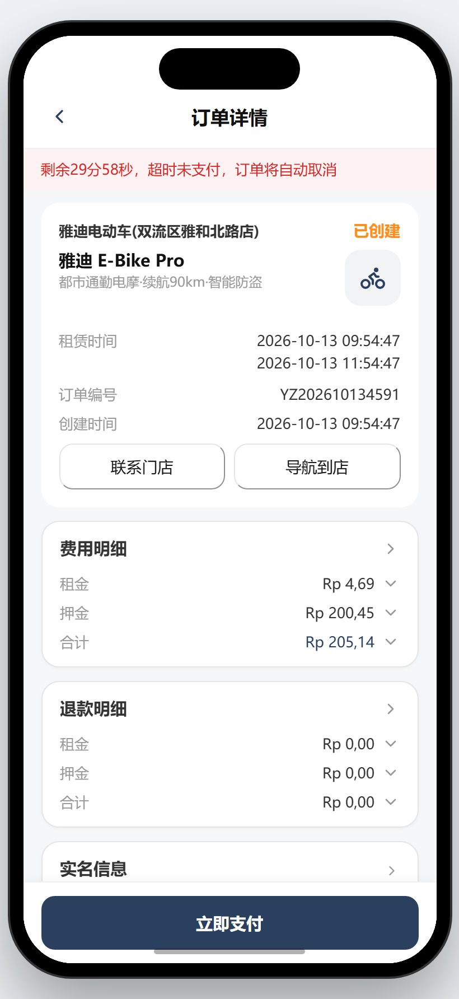
点击 立即支付 打开支付弹层，核对金额后选择支付方式并确认：
- 2C2P：线上支付
- 线下支付：由门店在平台端或商户端手动确认收款
- 钱包：使用钱包余额支付，余额不足时会提示「钱包余额不足，请充值」
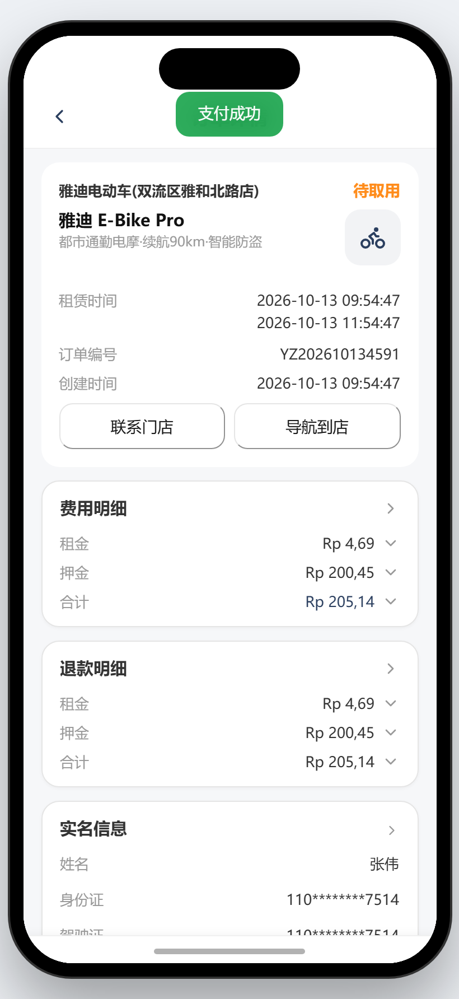
支付成功后订单状态变为 待绑定，页面顶部显示「支付成功」提示，费用明细中主订单的支付状态更新为「已支付」，同时记录支付渠道与支付时间。
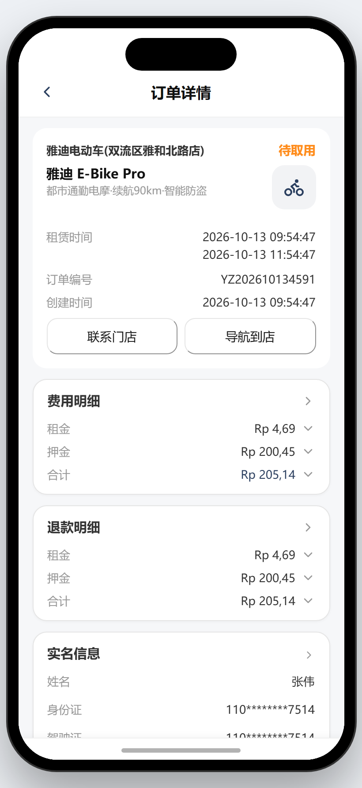
请在门店出示订单，由门店核对实名信息后交车。领取绑定车辆/电池后开始计算订单时长。
1.8 取车并绑定车辆 / 电池
到店后需要把门店交付的车辆或电池绑定到自己的账号，订单时长才开始计算。入口在订单详情页的 车辆信息 卡片右上角，是一个链接样式的绑定图标（🔗）；电池租赁、车电套餐订单则在 电池信息 卡片的同一位置。点击该图标即进入扫码页。
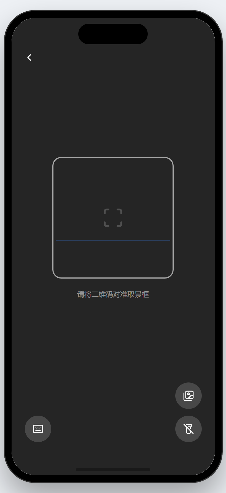
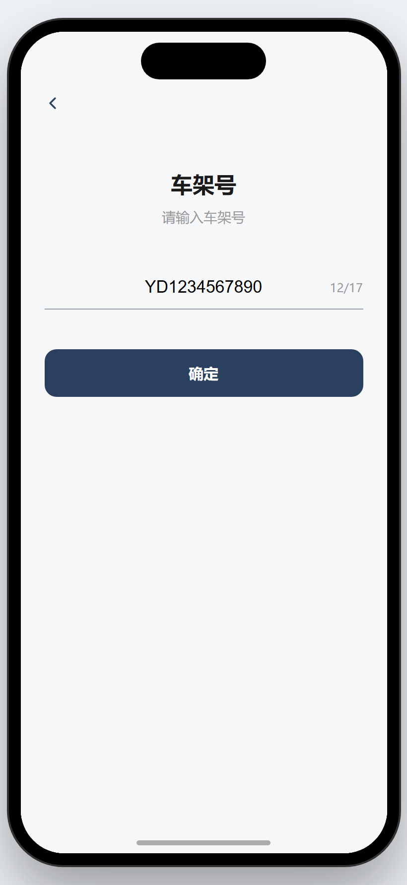
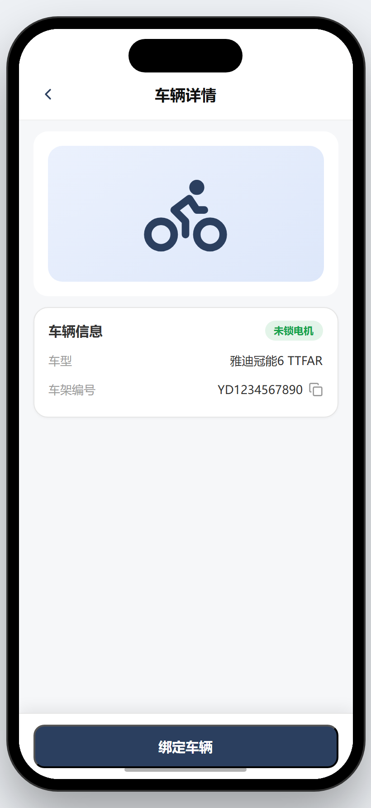
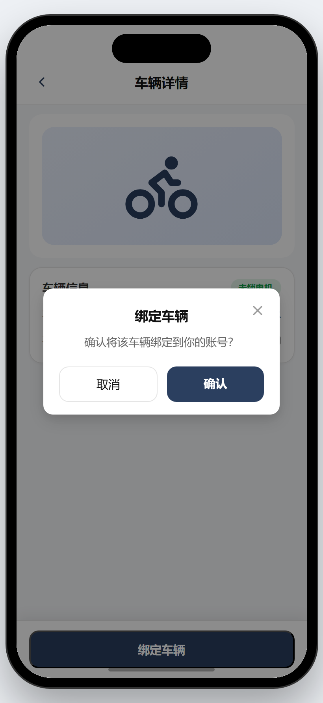
1. 绑定入口仅在订单处于「待绑定」状态时出现；
2. 车辆租赁订单在「车辆信息」卡片绑定，电池租赁与车电套餐订单在「电池信息」卡片绑定；
3. 绑定完成后，车辆 / 电池会出现在「我的爱车」中，订单时长自领取绑定后开始计算。
第 2 章 自动续租
到期前由钱包自动完成续租，适合长期用车、不希望中途断租的用户。开启后如不再需要，可随时在订单详情关闭。
2.1 何时开启
自动续租开关有两个位置，可以在下单时开启，也可以下单后补开：
- 下单时：订单确认页的「自动续租」区块（见图 6）
- 下单后：订单详情页的「自动续租」区块（见图 17）
开关仅在订单类型支持自动续租时展示。若在确认页或订单详情页看不到「自动续租」，说明该订单类型当前未开放自动续租，请使用手动续租（第 3 章）。
2.2 开启与关闭
点击开关即可开启或关闭，开关变为蓝色（开启状态）后立即生效。
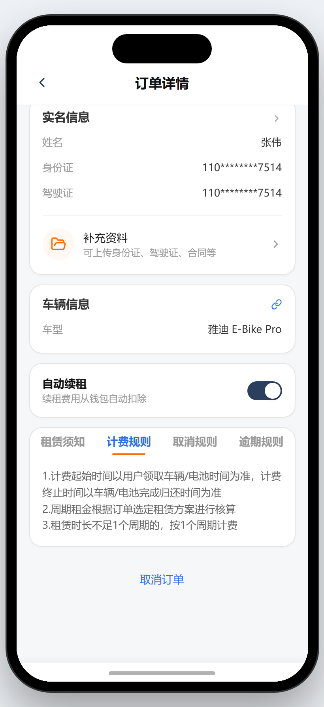
续租费用从 钱包 自动扣除。请保持钱包余额充足，余额不足会导致扣款失败、续租不成功。订单自动续租将自动关闭，后续需要手动开启。
自动扣款由系统定时任务发起。若你已为钱包充值，而系统尚未自动扣款，可进入订单详情 → 费用明细，找到该笔自动续租记录并点击 立即支付 主动完成支付，无需等待定时任务。
2.3 续租结果与费用
自动续租完成后，订单租期顺延，并生成一条「自动续租」费用记录。打开订单详情 → 费用明细 即可查看，记录包含租赁方案、新租赁时间、租金、押金、合计、支付渠道（钱包）、支付状态与支付时间。
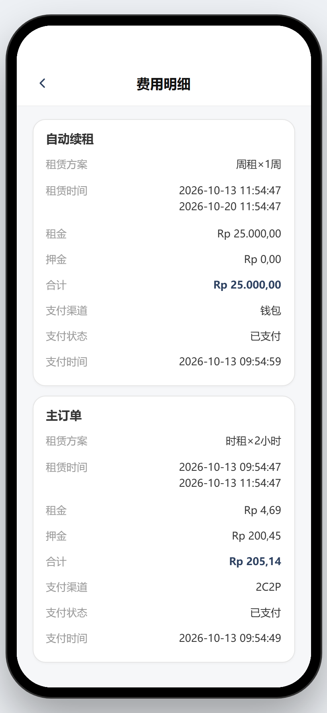
费用明细汇总了主订单与所有续租单（自动续租、手动续租），是核对租期与金额最准确的地方。
第 3 章 手动续租
按需延长租期。适合只在部分时段需要用车，或未开启自动续租的订单。
3.1 续租入口出现条件
订单进入 租赁中 / 即将到期 / 逾期未还 / 违约锁单 状态后，订单详情页会出现 续租 入口（卡片形式），费用明细页底部也会出现 续租 按钮。
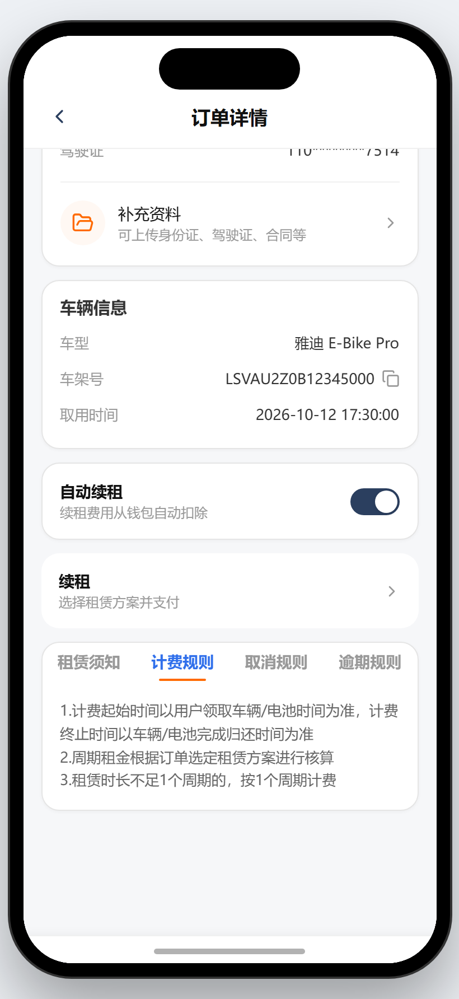
订单仍处于「已创建 / 待支付」或「待绑定」，或该订单类型未开放手动续租时，续租入口不会显示。取车后订单进入「租赁中」，入口即出现。
3.2 选择续租方案
点击 续租 打开续租弹层，操作方式与下单时的方案选择一致：
- 选择计费周期：时租 / 日租 / 周租 / 月租
- 用 − / + 调整续租时长，右上角「小计」与下方单价说明实时更新
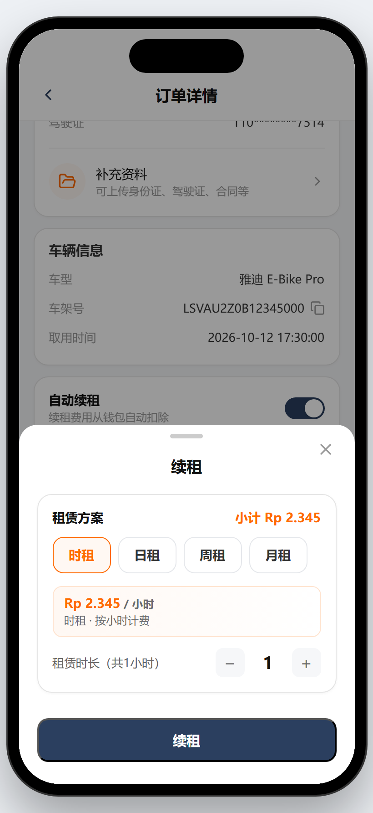
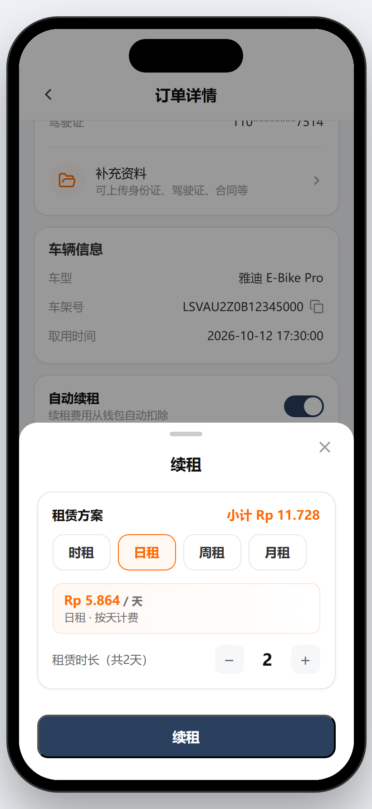
确认无误后点击弹层底部 续租，系统生成一张 待支付 的续租单，并自动进入支付弹层。
3.3 支付续租单
续租单在支付完成前租期不会生效，可随时在费用明细中继续支付：
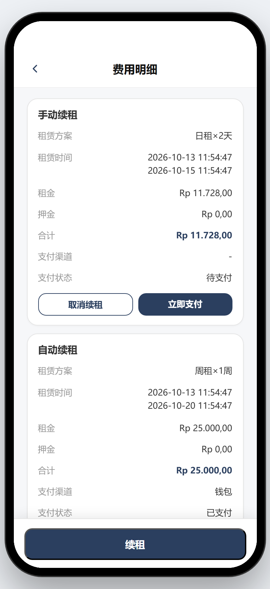
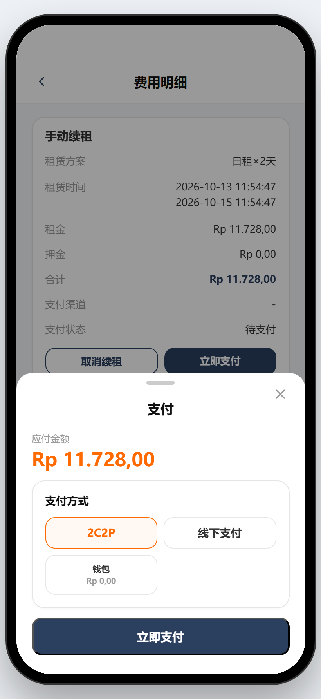
支付完成后，费用明细中该条续租记录的支付渠道、支付状态与支付时间会更新为「已支付」，租期同时顺延。
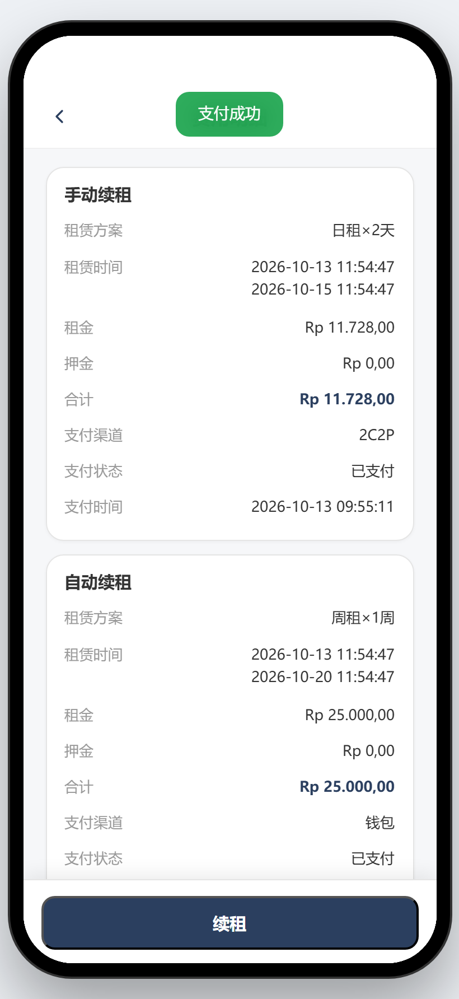
3.4 取消续租
对于已生成但尚未支付的续租单，可在费用明细中点击 取消续租。系统会弹出二次确认「取消续租 · 确定取消该续租？取消后不可恢复」，确认后该条记录标记为「已取消」，不再计入费用统计。
如果上一笔续租单仍未支付，再次点击 续租 会提示「存在未支付订单，续租失败」。请先支付该笔续租单，或先取消它，再重新发起续租。
第 4 章 常见问题
按用户最常遇到的疑问整理，遇到问题可先对照排查。
Q1 为什么订单里看不到「续租」入口？
续租入口只在订单进入 租赁中、即将到期、逾期未还、违约锁单 状态后出现。订单处于「已创建 / 待支付」或「待绑定」时不显示；若该订单类型未开放手动续租，也不会显示。
Q2 确认订单按钮点不动，提示「请先选择实名信息」怎么办？
该门店要求下单必须实名，未选择实名信息时无法提交订单。点击「实名信息」→ 新增，填写姓名、身份证号、驾驶证号并上传证件照（身份证、驾驶证各至少 1 张），保存后在弹层中选中该记录即可。
Q3 续租时提示「存在未支付订单，续租失败」是什么原因？
你还有一张未支付的续租单。请到订单详情 → 费用明细中，对该记录点击「立即支付」完成支付，或点击「取消续租」将其取消，然后重新发起续租。
Q4 自动续租的钱从哪里扣？扣款失败会怎样？
自动续租使用 钱包余额 扣款。请保持余额充足；余额不足会导致扣款失败、续租无法完成，建议先到钱包页面充值后再等待扣款。
扣款由系统定时任务发起。若你已充值但系统尚未扣款，可在订单详情 → 费用明细 中对该笔自动续租记录点击 立即支付 主动完成支付。
Q5 如何关闭自动续租？
进入订单详情，找到「自动续租」区块，点击开关关闭即可。关闭后不再自动扣款，如需延长租期请使用手动续租。
Q6 续租成功了，新的租期在哪里看？
在订单详情 → 费用明细中查看对应续租记录的「租赁时间」，起止时间即为新的租期；主订单租期会随续租顺延。
Q7 支付方式有哪些？可以用钱包支付续租单吗？
支付弹层支持 2C2P、线下支付、钱包 三种方式。选择「线下支付」时，确认后需等待门店确认收款；选择「钱包」时若余额不足会提示充值。
Q8 费用明细里的记录代表了什么？
费用明细按条列出 主订单、自动续租、手动续租 三类记录，每条包含租赁方案、租赁时间、租金、押金、合计、支付渠道、支付状态与支付时间。已取消的续租单不计入统计。
Q9 为什么订单详情里找不到绑定车辆 / 电池的入口？
绑定入口仅在订单处于「待绑定」状态时出现，位置在订单详情页「车辆信息」卡片右上角（电池租赁、车电套餐订单为「电池信息」卡片）。订单支付完成后即进入待绑定状态；若订单还未支付，请先完成支付，再到店取车时绑定。
附录 规则速查
把散落在各页面的关键规则集中成一页，便于快速查阅。
入口与显示条件
| 功能 | 入口位置 | 显示条件 |
|---|---|---|
| 租赁下单 | 首页 → 租赁入口 | 始终可进入（未登录先登录） |
| 绑定车辆 / 电池 | 订单详情 → 车辆信息 / 电池信息卡片右上角 | 订单状态为待绑定 |
| 续租 | 订单详情「续租」卡片 / 费用明细底部「续租」按钮 | 订单状态为租赁中 / 即将到期 / 逾期未还 / 违约锁单 |
| 自动续租 | 订单确认页、订单详情页开关 | 该订单类型支持自动续租 |
| 费用明细 | 订单详情「费用明细」 | 订单已生成 |
续租要点
| 项目 | 说明 |
|---|---|
| 计费周期 | 时租、日租、周租、月租，续租时可按需切换 |
| 自动续租扣款 | 从钱包余额扣除，需保持余额充足 |
| 自动续租未扣款 | 充值后若系统定时任务尚未扣款，可在费用明细中点击「立即支付」主动支付 |
| 手动续租生效 | 生成待支付续租单，支付完成后租期顺延 |
| 未支付续租单 | 会阻止再次续租，需先支付或取消 |
| 取消续租 | 仅限未支付的续租单，需二次确认，取消后不可恢复 |
| 计费起点 | 以领取车辆/电池时间为准；不足 1 个周期按 1 个周期计费 |
长期用车建议在下单时就开启自动续租并保证钱包余额充足；临时延长用车时长则使用手动续租，并在生成续租单后及时完成支付，避免影响下一次续租。